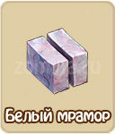

Получено: файл; исходный URL. Иллюстрация найдена на отдельной странице материала ZOMBIA; некоторые alt-подписи источника ошибочны, сопоставление по странице и имени файла. Страница: источник.
Белый мрамор
ВКонтакте; данные из ZOMBIA; 27 Июня 2011, 20:10- Тип
- нет данных
- Покупка
- нет данных
- Продажа
- нет данных
- Как получить
- Добыть камнетёсами Добыть камнетёсами (ВКонтакте, ZOMBIA; требует сверки).
- Применение
- нет данных
- Особенности
- нет данных
- Версия и дата
- ВКонтакте; данные из ZOMBIA; 27 Июня 2011, 20:10
Данные по источнику · ВКонтакте, ZOMBIA · 27 Июня 2011, 20:10; дата редакции не установлена
Предварительно: Данные одной исторической фанатской страницы; цифры и подписи изображений требуют сверки. Описание и условия сохранены по колонкам без додумывания.. Требуется сверка.
- Описание материала
- Ведро 3000 монет 3 Зомбакса Находится на: [изображение: зомби ферма, зомби мания]
- Участвует в строительстве
- нет текстовых данных; возможны неподписанные изображения
- Как достать
- Добыть камнетёсами Добыть камнетёсами
- Участвует в создании
- нет текстовых данных; возможны неподписанные изображения


Данные по источнику · браузерная версия; платформа не указана · дата редакции неизвестна
Предварительно: Подписи и последовательность пиктограмм перенесены без автоматического толкования. Названия, цены и направления стрелок требуют визуальной сверки; возможны ошибки самого сайта.. Требуется сверка.
- Колонка 1 в порядке пиктограмм
- [подпись: Белый мрамор; файл belyj-mramor.png] [подпись: Стоимость (Зомбаксов); файл zombucks.png] 3 [подпись: Продажа; файл moneta.png] 3000
- Колонка 2 в порядке пиктограмм
- [значок: proizvoditsya.png] [подпись: Камнетес; файл kamnetes.png] [подпись: Пара Камнетесов; файл para_kamnetesov.png] [значок: dobyvaetsya.png] [подпись: Остров Майя; файл ostrow_maya.png] [подпись: Остров Любви; файл ostrov@20lubvi.png]
- Колонка 3 в порядке пиктограмм
- [значок: stroit.png] [подпись: Японский храм; файл yaponsky@20hram.png] [подпись: Пирамида Майя; файл pyramida_maya.png]
- Колонка 4 в порядке пиктограмм
- [значок: sosdanie.png]
- Колонка 5 в порядке пиктограмм
Связанные сущности
нет проверенных связей — требуется сверка.